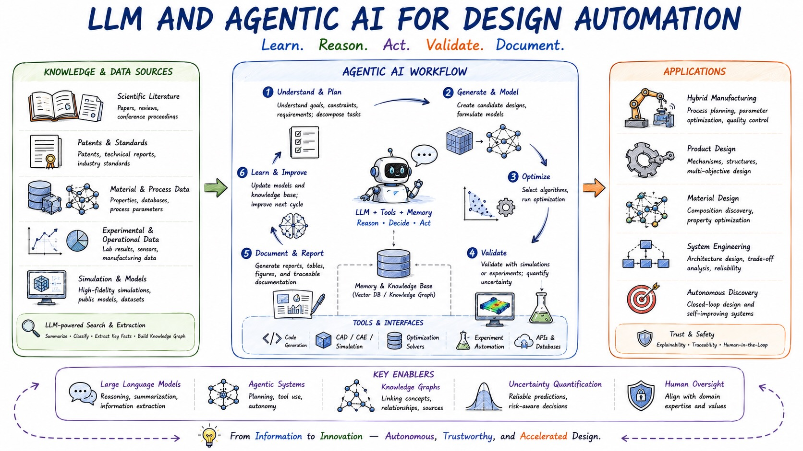

Large language models and agentic AI are creating new opportunities to automate complex engineering design workflows. Beyond generating text or code, these tools can help extract, organize, reason over, and act upon design-critical information from diverse knowledge sources, including research literature, patents, material property databases, experimental records, simulation results, and engineering documentation.
This research thrust focuses on developing LLM- and agentic-AI-based frameworks for design automation. A central goal is to enable intelligent systems that can mine relevant knowledge, identify design constraints and opportunities, generate candidate models or design concepts, execute simulations or optimization routines, validate results, and document the design process in a traceable and reusable manner.
Our work investigates how agentic systems can connect data mining, surrogate modeling, optimization, validation, and documentation into closed-loop design workflows. These systems may assist engineers by retrieving prior knowledge, building computational models, selecting appropriate design variables and objectives, recommending experiments or simulations, and summarizing results with uncertainty and evidence.
This thrust supports a broad range of engineering applications, including hybrid manufacturing processes, product and mechanism design, materials design, and systems engineering. Through this work, our lab aims to create trustworthy AI assistants and autonomous design agents that accelerate engineering innovation while maintaining interpretability, reliability, and human oversight.
Research focus
- Knowledge mining: extracting design-critical information from literature, patents, databases, records, simulations, and documentation.
- Closed-loop automation: connecting data mining, surrogate modeling, optimization, simulation, validation, and traceable documentation.
- Trustworthy design agents: supporting autonomous design while preserving interpretability, reliability, evidence, uncertainty awareness, and human oversight.